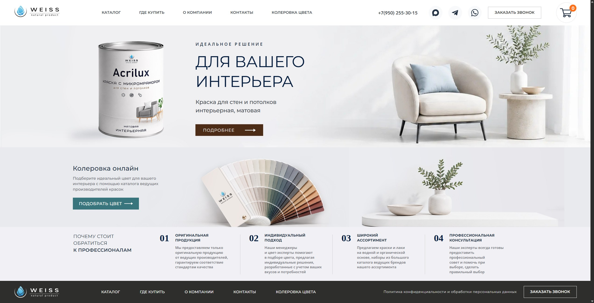
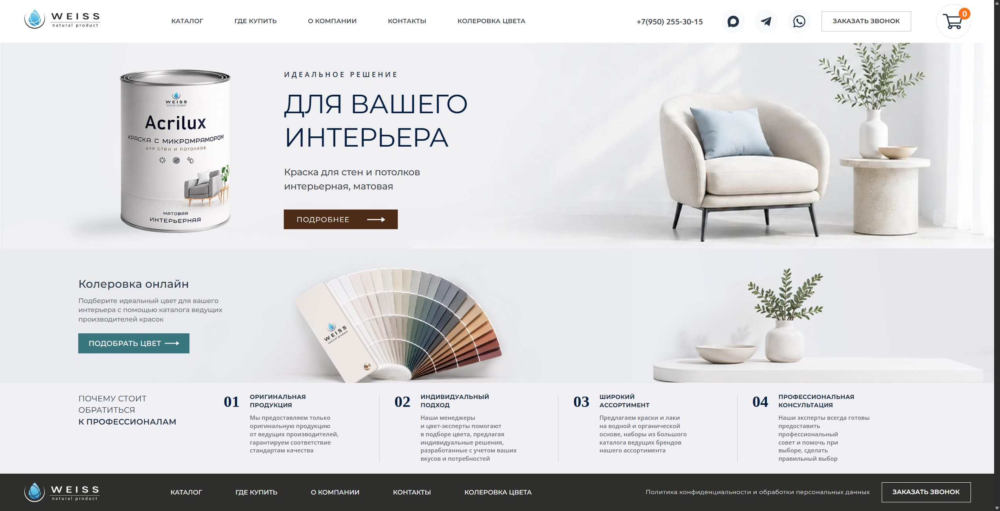
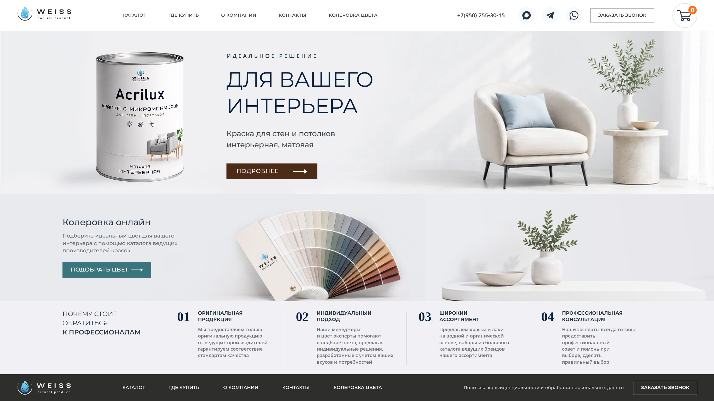
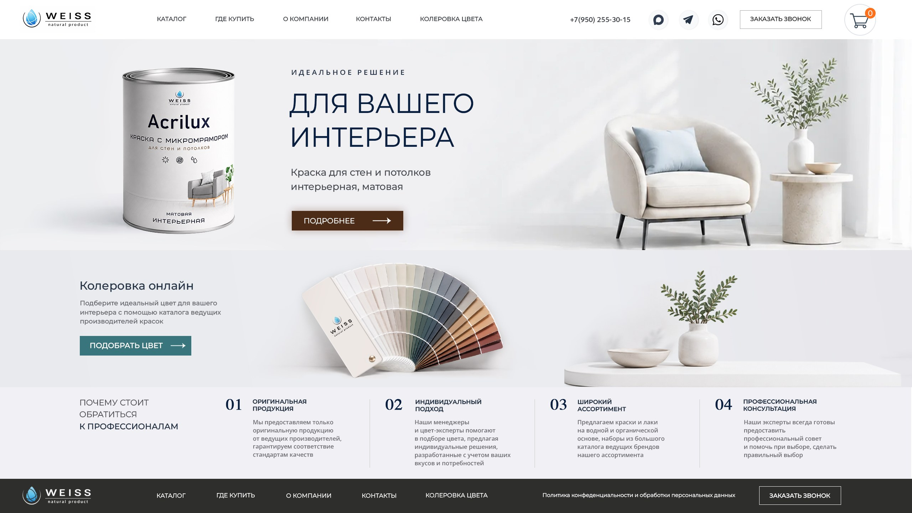

Окно 2544×1300 — это Chrome, развёрнутый на весь экран монитора 2560×1440: рамка окна забирает 16px по ширине, а вкладки, адресная строка и панель Windows — около 140px по высоте. Именно так сайт видит клиент.
Красной штриховкой отмечены боковые поля — расстояние от края окна до контента.
| Макет | Было | Стало | |
|---|---|---|---|
| Окно браузера | 2560×1440 | 2544×1300 | 2544×1300 |
| Контейнер | 2560 | 2304 | 2529 |
| Поле слева | 224 | 336 | 221 |
| Поле справа | 224 | 351 | 236 |
| Контент | 2112 | 1856 | 2086 |
| Прокрутка | нет | нет | нет |
Поля 221 вместо 224 — это 8,75 % от ширины окна без полосы прокрутки (2529px). Правое поле на 15px больше, потому что полоса прокрутки браузера стоит справа.




Проверить самому: weiss-color.vercel.app — в окне на весь экран и в полном экране (F11).
Снимки сделаны в Chrome 158, масштаб системы 100 %, без панели закладок. 23.11.2026.